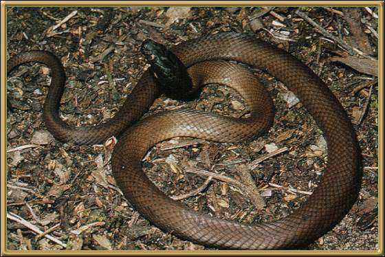

This is a very rare snake apparently, found only in the
region of Lake Cronin in Western Australia. Little seems to be known about them,
however, they are known to be toxic, although apparently not lethal to people.
Photographer: Unknown